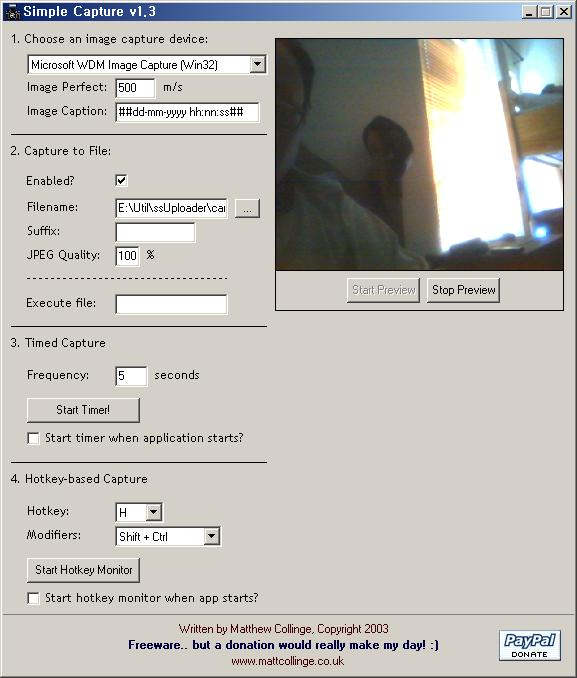

POSTS
Simple Webcam Capture - command line 지원
http://mattcollinge.wordpress.com/software/simple-webcam-capture/
다른 캡쳐프로그램들도 많지만 이건
command line을 지원한다.
즉, “예약된 작업”에 등록하면 특정 시간 간격으로 웹캠을 자동으로 찍고
curl 같은 유틸리티를 이용해서 자동으로 서버에 업로드 할 수 있다.
물론 이런 프로그램은 많이 있다.
그러나 백그라운드에서 사용자가 눈치채지 못하게 하려면 프로그램이 제일인듯하다.

command 라인에서 에러(Error processing command line options)가 발생하는 경우가 있는데
레지스트리에 몇몇 키가 세팅되어 있지 않아서이다.
이건 프로그램을 한번만 제대로 동작시키면 해결된다.
또 하나 제약사항은 command line 옵션을 모두 지정하여 실행해야 한다는 것이다.
아래는 나의 command line 옵션이다.
“E:\Program Files\Simple Webcam Capture\simplecapture.exe” /filename E:\Util\ssUploader\cam.jpg /jpgquality 80 /imgperfect 500 /suffix /imgcaption ##dd-mm-yyyy hh:nn:ss##